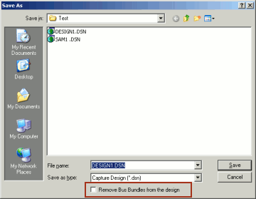

By definition, a NetGroup is a completely heterogeneous
collection of nets. Unlike a bus, which is a homogeneous
collection of nets (scalar or vector), a NetGroup provides
a greater flexibility in grouping nets together.
For example, you can collect together a large number of
signals on a page of a schematic into a NetGroup. You
create an off-page connector and then connect all the
signals on the NetGroup to the signals on another page.
|
|
While a NetGroup provides greater flexibility for net grouping than a bus, there will be many situations where a bus will be a sufficient implementation of the required functionary. So care should be taken not to assume that the NetGroup completely overrides the functionality and value of a bus. |
To create a NetGroup, you use the following objects (that are NetGroup-aware):
- Off-page connector
- Port
- Bus Wire
- Pin
- Global
When you create a NetGroup and define a property for the
NetGroup, this property is inherited by all the constituent
nets of the NetGroup.
You can create two types of NetGroups, a
named NetGroup or an
unnamed NetGroup.
When you add a NetGroup to a design, the design database version is upgraded to v16.5. This implies that the design can now not be opened in any version of Capture prior to v16.5. However, you can choose to remove all the NetGroups from a design (if you need to open the design in a previous version), by choosing Save As from the File menu and clicking the Remove NetGroups from the design checkbox.
